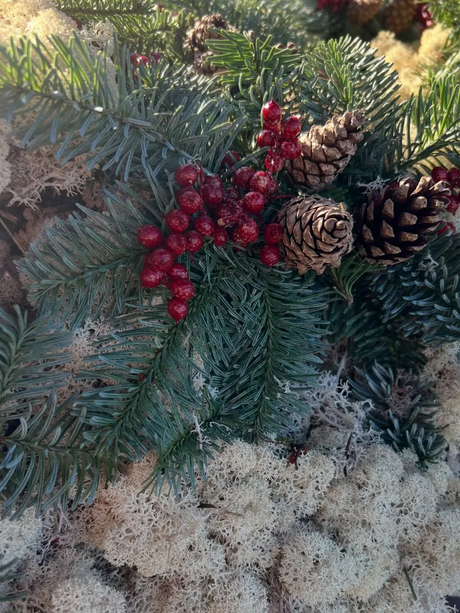
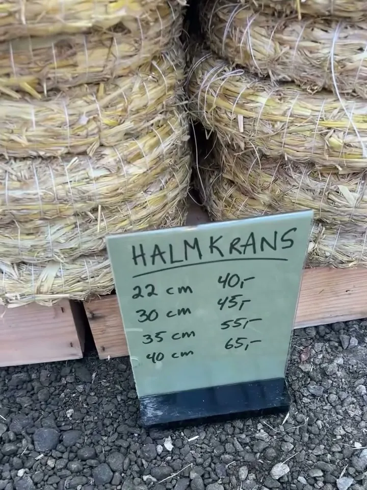
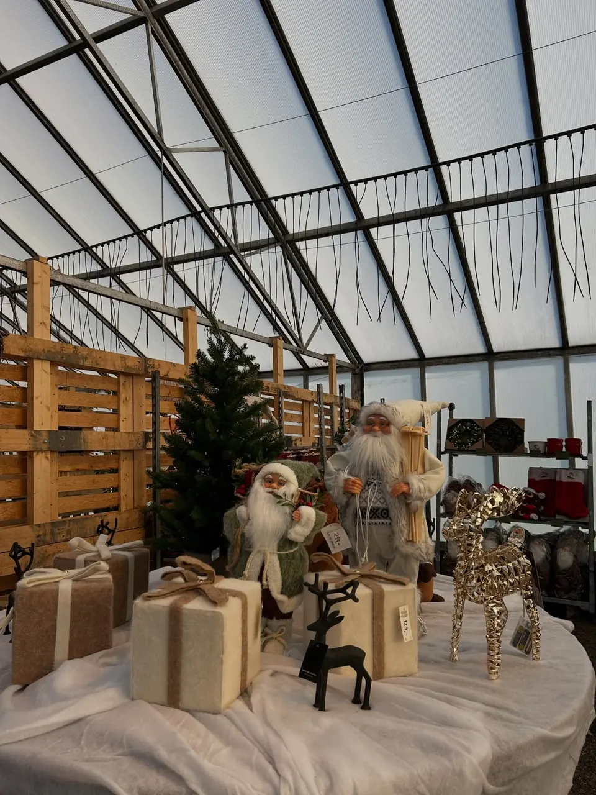
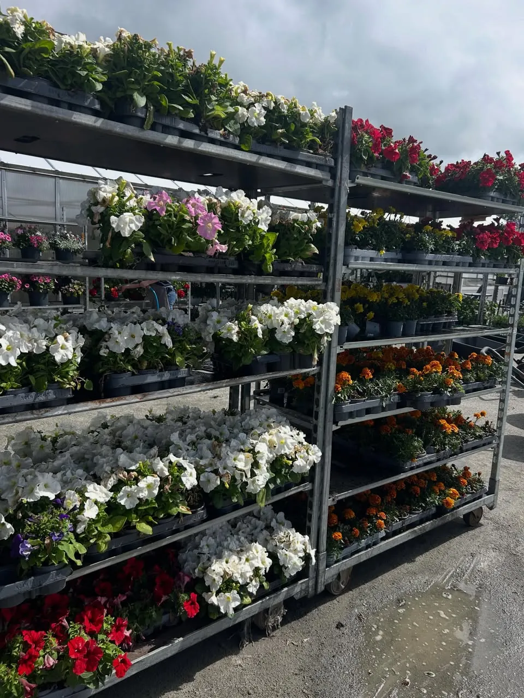
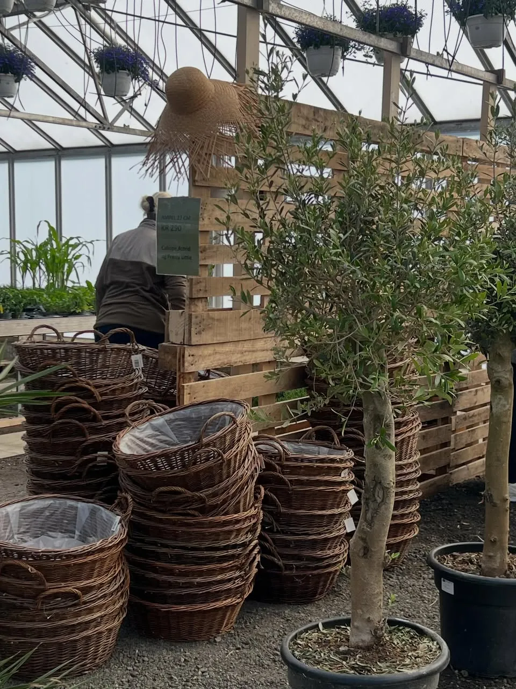
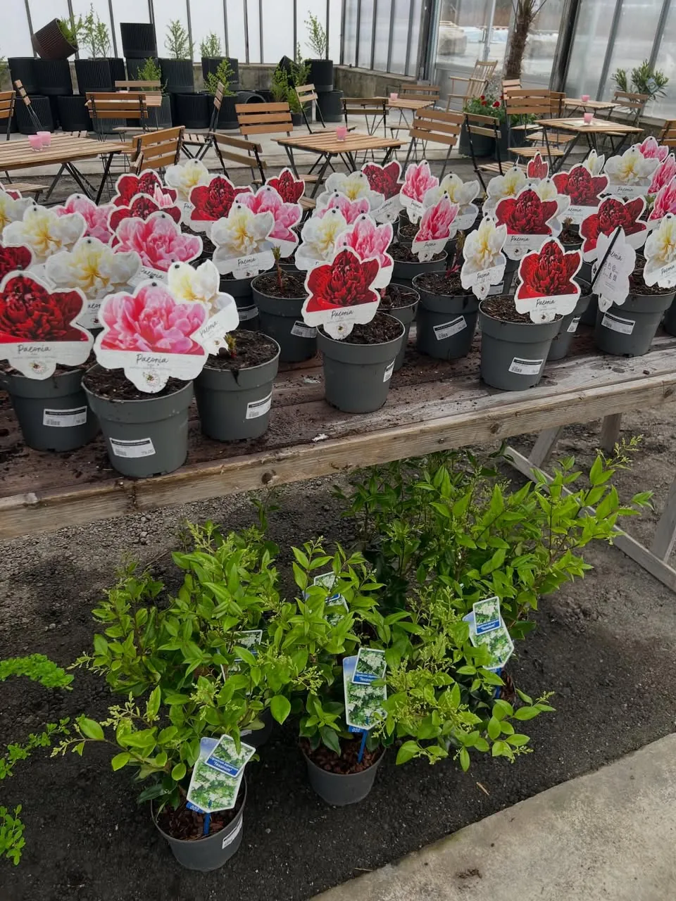
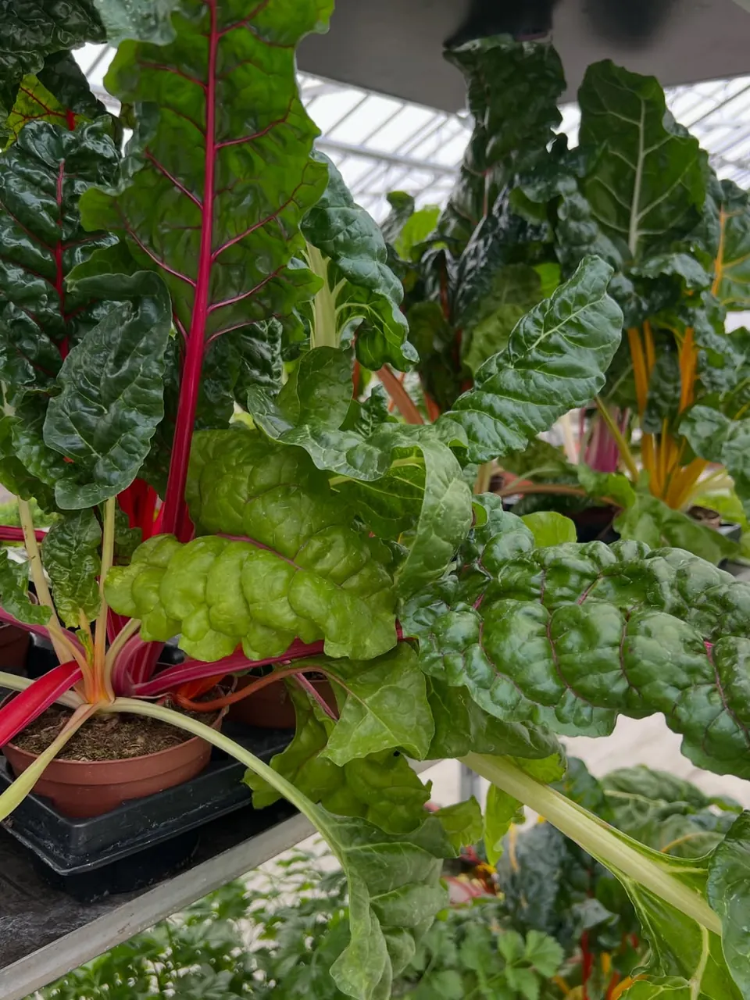
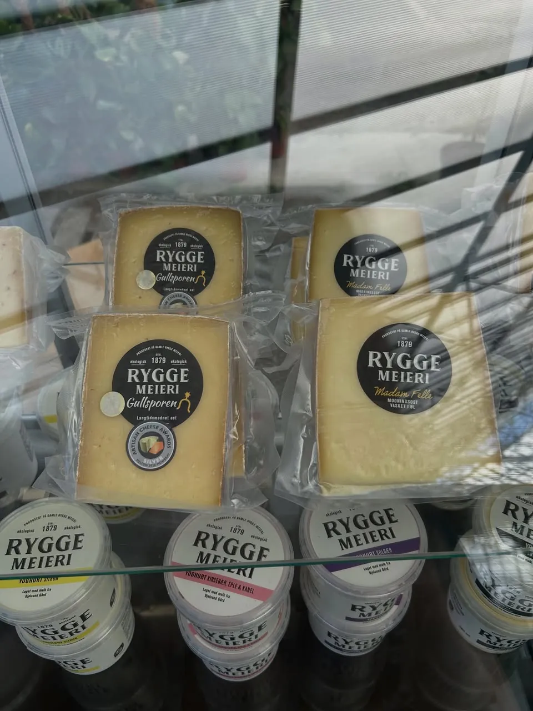
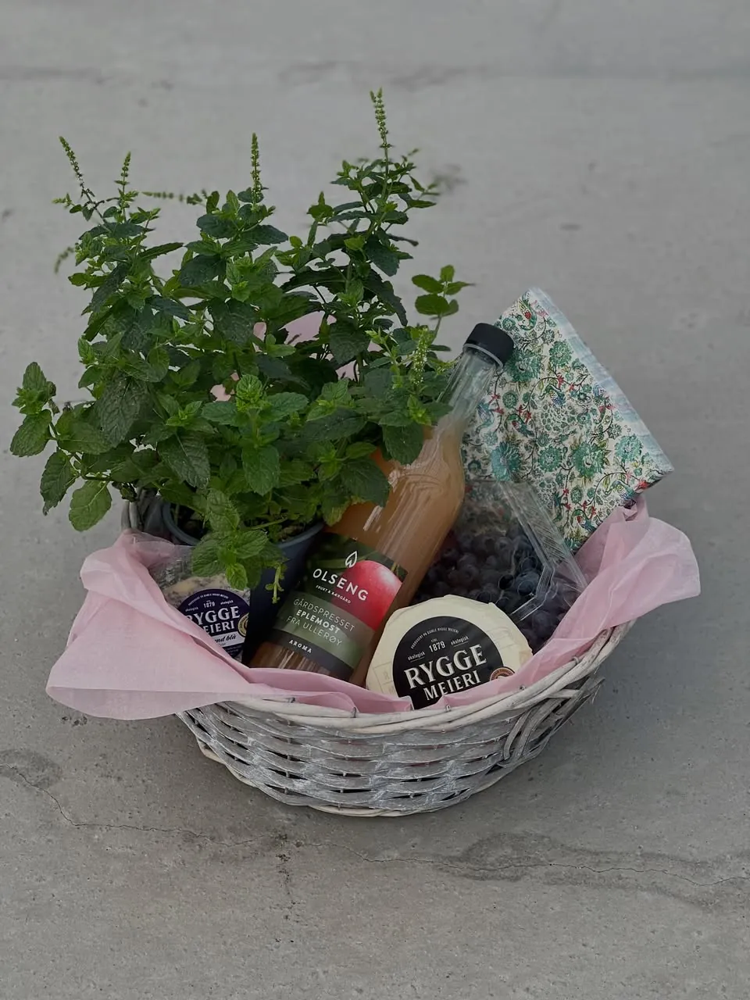
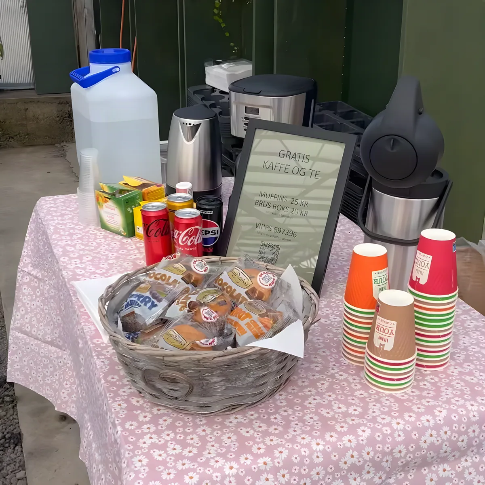

Lørdag 21. og søndag 22. november
Guttas Blomster kommer til helgen
Kalle binder buketter, dekorasjoner og kranser på stedet, og Paal har med egg, poteter og eplemost. Juleblomstene fra gartneriet til Magne får du til helgepris.
Lørdag 10–16Søndag 11–16
Juleblomster fra gartneriet
- Azalea, amaryllis, julestjerner og juleroser i 12 cm potte69,-
- Sypress, ca. 50 cm høy99,-
- Stor skimmia i 21 cm potte299,-
Paal har med seg
- 30 egg99,-
- Poteter, 5 kg89,-
- Eplemost fra Olseng79,-
I drivhuset nå
Juleblomster fra eget gartneri og et drivhus fullt av julepynt.
-

Julestjerner
Rett fra gartneriet til Magne. Flergrenede julestjerner i rødt, hvitt og nye farger, fra 25,-.
-

Amaryllis
Fra eget gartneri, 75,- stykket. Vi har også azalea og juleroser.
-

Kranser og granbuketter
Til døra, bordet og graven.
-

Halmkranser
Til å lage din egen krans.
- 22 cm40,-
- 30 cm45,-
- 35 cm55,-
- 40 cm65,-
-
Julepynt og nisser
Nisser, kurver, julestrømper og pynt til hele huset.
-

Dekor og gaver
Interiør til jula, gavekurver satt sammen etter ønske og gavekort.
200 meter Lenger har ikke blomstene våre reist.
Gartneriet har røtter i Moss som går over 130 år tilbake, og Magne Bergerud er tredje generasjon på gården i Rygge. Til vanlig sendes blomstene herfra til grossister og butikkjeder.
Våren 2026 ryddet vi et av veksthusene fra 1972 og åpnet dørene. Nå kan du handle blomstene der de har vokst opp.


Utvalget
Sommerblomster og ampler fra eget gartneri. Orkideer og stueplanter. Stauder, busker og frukttrær. Urter og grønnsaksplanter. Oliventrær, krukker, kurver og jord.
Utvalget skifter med årstidene og med det som er klart i gartneriet.









Året i drivhuset
Sommerblomster, ampler, urter og stauder til hagen og balkongen. Det meste kommer rett fra gartneriet.

Utpå sommeren modner blåbærene på jordet. Da kan du plukke selv, eller kjøpe ferdig plukket i butikken.


Lyng, krysantemum, høststjerner og blomsterløk. Før Halloween rydder vi plass så du kan skjære ut gresskar i drivhuset og slippe sølet hjemme.

Julestjernene, azaleaene, amaryllisene og julerosene kommer rett fra gartneriet til Magne. Vi har kranser og granbuketter, og drivhuset er fylt med julepynt, dekor og interiør. Trenger du julegaver, setter vi sammen en gavekurv etter ønske.
Mat fra gårdene rundt oss
Vi har en kjøledisk midt blant blomstene. Om høsten henter vi også gresskar fra Vestre Bjølsund gård.
Trenger du en gave, setter vi sammen en kurv i den prisklassen du ønsker. Vi har gavekort også.
-

Ost Rygge meieri -
 Eplemost
Olseng i Skjeberg
Eplemost
Olseng i Skjeberg
-
Blåbær
Vårt eget jorde, om sommeren
-

Gavekurver Satt sammen etter ønske
Det står kaffe på kanna.
Kaffe og te er gratis. Sett deg ned ved et av bordene mens du planlegger hagen. Det er helt greit å bare komme innom for å kikke.

Åpningstider
| Mandag til onsdag | 10-16 |
|---|---|
| Torsdag | 10-18 |
| Fredag og lørdag | 10-16 |
| Søndag | 12-16 |
Rundt helligdager kan tidene være annerledes. Da sier vi fra på Facebook og Instagram.